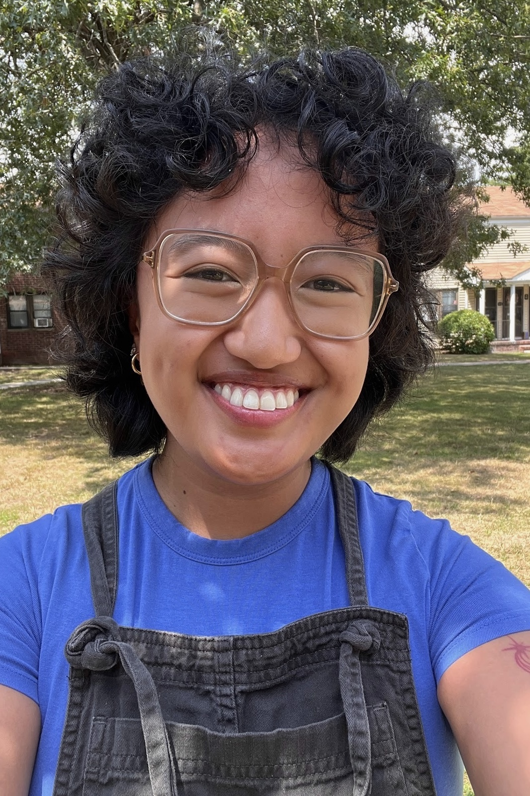

Our Purpose
Inspired by our own deep love and emotional connection to music and our experiences in academic settings that deprioritized and undervalued music exploration and education, we created this website to provide a variety of resources to help educate U.S. high school students, parents, and teachers about music.
Each member of our team remembers a time in adolescence when music helped us navigate a difficult situation or difficult emotions, and we recognize the critical role music can play in teens' lives. We also feel that music can be a very accessible way of exploring one's own tastes, which is important for young adults as they begin to take control over their own lives. High school is a stressful, emotionally tumultuous part of every person's life and we think that music can provide some relief.
Beyond our personal experiences, there are proven health benefits to engaging with music including:
- Decreased anxiety and increased mood regulation, motivation, and personal expression (Kubicek, 2022; Howell, 2024)
- Improved mental health and stress management (Josyula & Kaci, 2024)
- Improved overall wellbeing and quality of life (Kubicek, 2022)

On this site, you can:
- Explore different types of music and learn about artists, songs, and genres
- Locate information about upcoming music-related events, including concerts, award shows, and upcoming album releases
- Compare features of a wide range of streaming service platforms
Our Team
Marianne BenyaminI am a current Management Consultant and aspiring UX Designer from Maryland. I love a wide range of music from UK Rap to Indie Pop. Some of my recent and long-time favorite artists include SZA, TUL8TE, The Marias, and Bad Bunny. I love sharing music with friends and attending live events. Music also helps me get through busy days and stressful times. |
|
|
 |
Sophia CaparrosI’m a children’s library assistant and illustrator from New Jersey. My favorite artists are Mitski, My Chemical Romance, and Sammy Rae and the Friends. If I’m feeling anxious, I always turn to music with booming vocals and a good hard beat to drown out everything else. I also like singing showtunes while I’m in the kitchen :) |
Caroline HendersonI'm an aspiring law librarian and recent JD graduate from North Carolina. My favorite artists include Glass Animals, Chappell Roan, and Lizzy Campbell. When I'm not listening to audiobooks I'm listening to music, and I really enjoy spending time looking to discover up-and-coming artists to stream and share. |